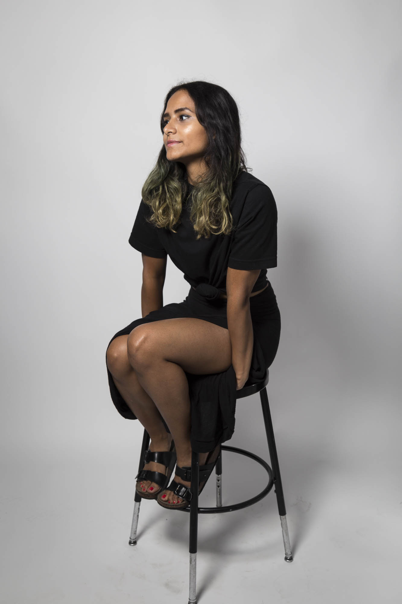

About Me
Hello my name is Catherine Gomez. I was born in Houston, TX. I don't have a middle name, and my friends call me Xat. I like trading the 'C' in Cat for an 'X' because it's gender neutral and that way my work won't be interpreted sole through the lens of a female. I love laying in the grass with friends and looking deeply into the eyes of my loved ones. My dog's name is Charlie and I miss him dearly, he currently resides in Tampa, FL.
As a New Media artist I use tech based mediums to create works of art. My favorite projects to date include a VR collaboration with my online friend The Glad Scientist. He lives in Berlin now, where I hope to live soon as well.
Works I hope to make in the near future include VJ experiences, a projection installation onto a fan, and reality pieces. All of my work deals with themes of trauma, race, and identity.